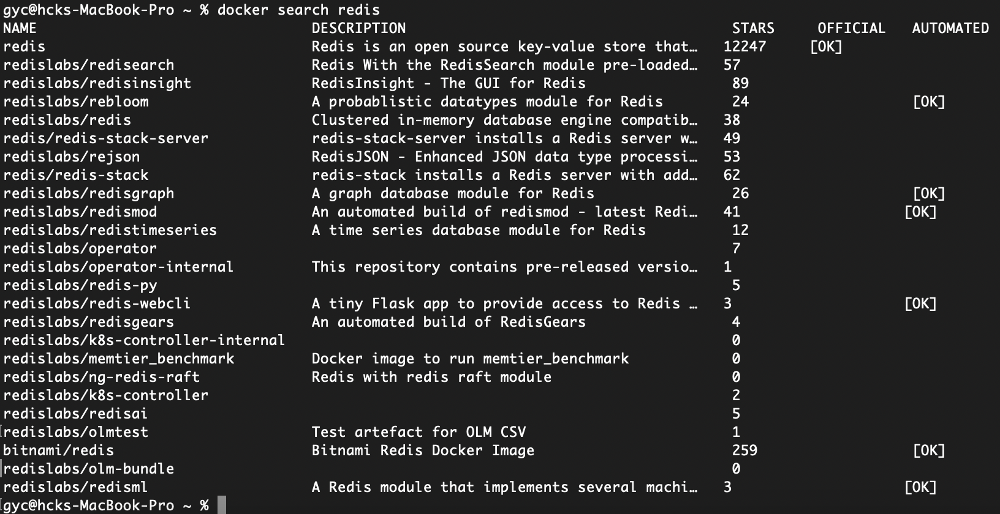
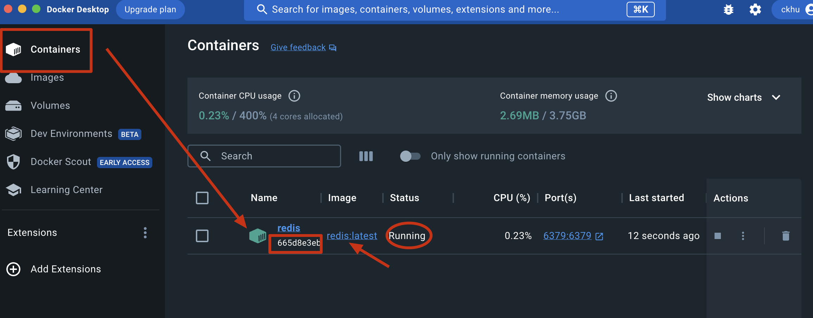
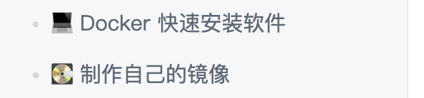

Docker
📌总结(置顶)
连两个核心技能，使用docker安装部署开源软件；使用docker制作自己项目的镜像并发布。
使用docker安装软件
要用docker快捷地安装一个软件分为以下的步骤
-
前置条件，已经配置好境内加速源(docker desktop/ setting/ docker engine/ "registry-mirrors")
-
docker search 在docker-hub找到要安装的软件。命令行替代的操作应该就是
docker search redis. 结果如下👇  -
docker pull redis.
docker images
对应的desktop 的 GUI的呈现:
但是容器列表是空无一物的（恰恰对应docker ps没有任何返回），现在只是有了镜像（对应docker images）。
- [OPTIONAL] Docker挂载配置文件
接下来就是要将redis 的配置文件进行挂载，以配置文件方式启动redis 容器。（挂载：即将宿主的文件和容器内部目录相关联，相互绑定，在宿主机内修改文件的话也随之修改容器内部文件）
- docker run
首先要知道这个命令的作用是：
使用方式: docker run [OPTIONS] IMAGE [COMMAND] [ARG...] Create and run a new container from an image
docker run -d -p 6379:6379 --name redis redis:latest 参数的选择参考文档，基本的结构是这样的。
运行结果
对应GUI

关键信息都是匹配的。目前这个容器已经运行起来了。
此时docker ps 就可以查看了
- 进入容器 docker exec
docker exec -it redis sh 注意redis是容器的名字或者id都可以，能标记即可。
第一次进入是进入容器，第二次进入是开启并进入redis的CLI程序
同理第一次exit和第二次exit将会发挥对应的作用。
-
删除redis ——将包括redis容器和redis镜像的删除
-
docker ps -a查看 -
docker stop [CONTAINER NAME]
-
docker rm redis
-
接下去删除镜像
docker rmi <容器ID>首先可以先docker images查看, copy 对应的 ID
例如
docker rmi c4645622ca39
使用docker制作自己项目的镜像
方法2：通过docker build 创建一个镜像。
使用docker build 创建镜像时，需要使用 dockerfile 文件自动化制作image 镜像。 注意：dockerfile 有点像源码编译时./configure后产生的 Makefile
接下去的学习看下面的链接👇。不着急不需要一天内全部学完！
https://docker-curriculum.com/#webapps-with-docker
下面是完整版
第一章 什么是DOCKER
PAAS平台
PAAS代表"Platform as a Service"，即平台即服务。
PAAS是云计算服务模型之一，它提供了一个完整的应用程序开发和部署平台，使开发者可以在云上轻松构建、部署、运行和扩展应用程序，而无需关心底层基础设施的细节。做PAAS的初创公司的核心技术 随后开源，便是后来的docker。
最初，docker的功能就是将linux容器中的应用代码打包，可以轻松的在服务器之间进行迁移.
为什么 以及 什么是docker
不管开发测试还是运维，绝大多数人都应该会接触到docker. 包括部署一些开源的工具github仓库readme的说明，通常首选docker。
docker是一个用来装应用的容器， 可以把hello word放在docker中，可以把网站放入docker中，可以把任何想得到的程序放在docker中.
第二章 learn about DOCKER
2.1 docker思想
2.1.1 集装箱
没有集装箱之前运输货物，东西零散容易丢失，有了集装箱之后货物不容易丢失，我们可以把货物想象成程序，目前我们要把程序部署到一台新的机器上，可能会启动不起来，比如少一些配置文件什么的或者少了什么数据，有了docker的集装箱可以保证我们的程序不管运行在哪不会缺东西.
2.1.2 标准化
- 运输方式
docker运输东西有一个超级码头，任何地方需要货物都由鲸鱼先送到超级码头，然后再由鲸鱼从超级码头把货物送到目的地去.
对应的技术来说，比如我们要把台式机的应用部署到笔记本上，我们可能选择用QQ发过去或者用U盘拷过去， docker就标准化了这个过程，我们只需在台式机上执行一个docker命令，把鲸鱼派过来，把程序送到超级码头去，再在笔记本上执行一个docker命令，然后由鲸鱼把程序从超级码头送到笔记本上去.（过程涉及两次docker命令，一次由来源机器发出，第二次由接受机器发出）
- 存储方式
当我们把程序存储到笔记本上时，我们需要一个目录，且我们要记住这个目录，因为下次我们可能还要修改，有了docker之后我们就不用记住程序在哪里了，我们使用的时候只需要一条命令就行了.
- API接口
docker提供了一系列rest api的接口，包含了对docker也就是对我们的应用的一个启动、停止、查看、删除等等指令，
如当我们要启动tomcat时我们要执行startup命令，当我们要停止时要执行shutdown命令，如果不是tomcat，我们可能还需要一些别的命令.有了docker我们记docker的命令就可以对其进行操作.
2.1.3 隔离
我们首先借助虚拟机来做对比。
- 我们在使用虚拟机时有自己的cpu，硬盘，内存， 完全感觉不到外面主机的存在，
- docker也差不多，不过它更轻量，我们创建虚拟机可能要几分钟，但是docker只需要一秒.
(Docker的)最底层的技术是linux一种内核的限制机制，叫做LXC——
LXC是一种轻量级的容器虚拟化技术，用于隔离和运行独立的应用程序或服务，最大效率的隔离了进程和资源. 通过cgroup，namespace等限制，隔离进程组所使用的物理资源，比如CPU，MEMORY等等.
简单来说，LXC允许在一个主机系统上创建多个独立的用户空间实例（isolated user-space instances），每个实例被称为一个容器。这些容器之间相互隔离，彼此独立运行，并且共享主机的Linux内核，因此不需要额外的操作系统开销。这使得LXC容器相对于传统的虚拟机来说更加轻量级、高效，并且启动速度更快。
2.2 docker解决的问题
2.2.1 系统环境不一致
开发:我本地没问题.运维:服务器没问题. 这个问题就变成了皮球.
如果一个应用要正常的启动起来需要什么?比如java web应用；还需要一个操作系统，操作系统之外，要jdk，tomcat，我们的代码，配置文件.
- 操作系统的改变可能会导致我们的应用开不起来，比如我们调用了某些系统命令.
- jdk版本也可能导致程序的运行失败.比如class文件需要1.7编译，我们装了个1.6的jdk.
- tomcat版本也能导致失败，比如旧的版本一些配置在新版本中不再支持.
- 代码的话就比如应用了C盘，D盘的一个文件，或者是用了系统的一些环境编码.
- 配置的话我们可能少了某个配置文件等等.
下面docker来了，它把操作系统，jdk，tomcat，代码，配置全部放到集装箱里.再打包放到鲸鱼上，由鲸鱼给我们送到服务器上，在我的机器上怎么运行，在别的机器上也怎么运行.不会有任何的问题. 一句话就是docker解决了运行环境不一致所带来的问题.
2.2.2 约束特性
docker在启动的时候就限定好了它最大使用的CPU硬盘，如果超过了，就会杀掉对应进程. 事实上就是预先就建好了天花板。
2.2.3 运行快
为什么会这么快呢?都是用标准的方式把我们的程序运过来，下载过来，再用标准的方式把它运行起来，就可以做到只要在每台机器上都执行一两条命令，就可以让程序正常跑起来，并且不用担心有问题.
第三章 走进docker
镜像就是上面说的集装箱,仓库就是超级码头,容器就是我们运行程序的地方.docker运行程序的过程就是去仓库把镜像拉到本地,然后用一条命令把镜像运行起来变成容器.
build:构建,就是构建镜像.
ship:运输,运输镜像,从仓库和主机运输.
run:运行的镜像就是一个容器.
build,ship,run和镜像,仓库,容器是一一对应的.
3.1 镜像
镜像的英文名交image.前面我们讲到了集装箱,鲸鱼拖着的所有集装箱就是一个镜像.
从本质上来说镜像就是一系列文件,可以包括我们应用程序的文件,也可以包括我们应用的运行环境的文件,既然是文件,那么是以什么样的格式在本地保存的呢?
说到存储格式,就要提到linux的一个存储技术,叫做联合文件系统,是一种分层的文件系统,可以将不同的目录挂到同一个虚拟文件系统下.
比如test1下有三个文件夹,test2下有两个文件夹,还有一个readme文件.联合文件系统就是可以在一个文件夹(test)中看到多个文件夹(test1,test2)中的内容.
通过这种方式可以实现文件的分层,test1可以把它看作第一层,test2可以把它看作第二层,每一层有每一层自己的文件,docker就是利用了这种分层的概念实现了镜像存储.
下图就是镜像的存储格式,这张图是分层的,最下面一层,上面也是一层层的好像集装箱罗列在一起.这就是镜像最直观的存储方式.下面是操作系统的引导,上面是linux操作系统,再上面是一些相关的软件,如果是我们自己的程序,就可以是tomcat,jdk,再往上是应用代码,每一层是我们自己都可以控制得,最上面一层先忽略不看,因为这是和容器有关的.注意一点,docker镜像系统的每一层都是只读的,然后把每一层加载完成之后这些文件都会被看成是同一个目录,相当于只有一个文件系统.
docker的这种文件系统被称之为镜像.
3.2 容器
为了便于理解,大家可以把容器想象成虚拟机,每个虚拟机都有自己的文件系统,可以把图1整个一部分看成是文件系统,与虚拟机系统的区别是这里面的文件系统是一层一层的,并且最下面的n层都是只读的,只有上面一层是可写的.
为什么要有可写的这层呢?大家的程序运行起来,势必会要写一些日志,写一些文件,或者对系统的某一些文件做一些修改,所以容器在最上面一层创建了可读可写的文件系统.
在程序的运行过程中,如果要写镜像文件时,因为镜像的每一层都是只读的,它会把文件的每一层拷到文件的最上层,然后再对它进行修改,修改之后,当我们的应用读一个文件时会从顶层进行查找,如果没有才会找下一层.
自上而下的检索，自下而上的fetching
由于容器的最上一层是可以修改的,镜像是不能修改的,这样就能保证镜像可以生成多个容器独立运行,没有任何干扰.
镜像和容器之间的关系👇
- Docker镜像是一个静态的模板，类似于文件系统的快照，包含了一个完整的应用程序运行环境。
- Docker容器是镜像的一个实例，是镜像的运行时状态，代表一个正在运行的进程。容器可以在镜像的基础上启动，并且可以在运行时进行更改，但这些更改不会影响原始镜像。
简而言之，Docker镜像是一个准备好的模板，而Docker容器则是根据该模板创建的可执行实例。通过镜像，你可以创建多个相互隔离的容器，并且每个容器都可以独立运行不同的应用程序。
3.3 仓库
我们的镜像是要在其它机器上运行,如何进行传输呢?
这就用到了docker仓库,我们要先把我们的镜像传到docker仓库中,再由目的地把docker仓库拉过去,这就完成了这样的一次传输过程.
谁提供了这样的仓库呢?docker自己提供了,hub.docker.com,但是非常慢,为了解决这个问题,国内很多公司也在做自己的仓库.比较知名的是网易蜂巢 。
第四章 macOS安装Docker
👉 指导教程
第五章 docker初体验
5.1 docker基本命令
1.docker pull [options] NAME[:TAG]
通过此命令可以docker远程仓库拉取镜像到本地.
NAME是拉取镜像的名称, :TAG表示是可选的,如果不选表明时latest,如果选择表明是指定版本的.
options是拉取的一些参数.
当不加请求地址的时候会去docker的官网拉取镜像.
2.docker images [options] [REPOSITORY[:TAG]]
options是选项,后面是指定镜像的名称.这个用的不多,可能当本地镜像非常多的时候要指定查看某一个镜像.
IMAGE ID 其实是一个64位的字符串,它可以唯一标识我们的镜像,这里只显示了16位,后面的被截掉了.
3.docker run [options] IMAGE[:TAG] [COMMAND] [ARG..]
IMAGE是镜像的名字
COMMAND是运行起来的时候要执行什么命令.
ARG表示这条命令运行需要的参数.
5.2 docker运行镜像流程

Docker客户端（Client），Docker主机（Docker Host），以及Docker仓库（Registry）
👉 详细的解释
- Docker客户端是与用户交互的工具，用于发送Docker操作命令给Docker主机上运行的Docker守护进程。
- Docker主机是运行Docker守护进程的物理计算机或虚拟机，负责管理Docker容器和镜像，并执行与容器相关的操作。
- Docker仓库是用于存储Docker镜像的中央存储库，可以是公共仓库（如Docker Hub）或私有仓库，供用户拉取和推送镜像。
一些注意点⚠️: Docker镜像是用于创建容器的模板; Docker主机上运行的Docker守护进程监听来自Docker客户端的命令请求，并执行相应的操作，如创建、启动、停止和销毁容器，管理网络和存储等；
docker pull: 首先docker pull向docker daemon发送了一条命令pull, 告诉docker daemon要拉取某一个镜像。 docker daemon会在本机检查镜像是否存在,如果存在且版本就是我们想要拉取的版本,它就不会做任何的操作. 如果本地不存在目标镜像，下一步它会到docker的仓库中找我们要拉取的镜像名字,如果找到了就会有docker仓库传送到我们的本地, 把我们要的镜像传送到我们的本地来.
docker run: 首先把命令发送到我们的docker daemon,docker daemon会先检查镜像在本机是否存在,如果不存在相当于执行了一个docker pull的过程,下载回来之后会以一定方式把镜像运行起来变成docker容器. (docker镜像是创建docker容器的模版，容器也是程序运行的主体)
第六章 docker运行nginx
6.1 运行nginx镜像
我们打开网易蜂巢镜像中心
搜索nginx,可以看到有两个nginx,他们的名字和头上和图标都不一样,一个是鲸鱼,一个是两个球.
带有鲸鱼的镜像表示这个镜像是从官网的镜像中心复制过来的.这个镜像与docker的镜像是一摸一样的.我们使用此镜像.
点进去,会有下载地址,复制里面的地址,然后拉取镜像.
复制到系统中运行.
运行完后可以查看镜像状态
在前台运行容器命令如下,输入后容器就会运行,按ctrl+c可以终止容器的运行.
docker run hub.c.163.com/library/nginx
在后台运行容器:
docker run -d hub.c.163.com/library/nginx
查看运行的容器:
docker ps
更多关于运行的命令:
docker run --help
因为我们在平时运行的时候需要调试容器内部的设置、查看一下日志等等.我们可以通过如下命令进入容器内部:
命令的大体内容:
命令具体内容:
docker exec -it [Container ID] bash
-i 保证我们的输入有效,即使在没有detach的情况下也能运行. -t 表示将分配给我们一个伪终端.我们将在伪终端输入我们的内容.
后面跟着的是容器的id,即我们上面用ps查询出来的id,这个id可以少写几位,它会自动识别.
可输入如下命令了解更多:
docker exec --help
输入命令后发现我们前面的标识也变了,相当于进入了一个新的电脑.
可以查询一下nginx在什么位置
which nginx
打开ps查看一下当前运行的进程.我这里提示没有ps命令.我从网上查了一下发现是因为当前系统没有安装这个命令,然后我安装了一下.
安装ps命令:
apt-get update
apt-get install procps
安装过程中：
利用ps命令查看进程,可以发现nginx已经在运行了.
ps -ef

输入exit即可退出并返回原来的系统.
6.2 docker网络
略
下面只介绍：

第七章 docker安装软件
💻Docker 快速安装软件
直接安装的缺点
- 安装麻烦，可能有各种依赖，运行报错。例如：WordPress，ElasticSearch，Redis，ELK
- 可能对 Windows 并不友好，运行有各种兼容问题，软件只支持 Linux 上跑
- 不方便安装多版本软件，不能共存。
- 电脑安装了一堆软件，拖慢电脑速度。
- 不同系统和硬件，安装方式不一样
本文档课件配套 视频教程
Docker 安装的优点
- 一个命令就可以安装好，快速方便
- 有大量的镜像，可直接使用
- 没有系统兼容问题，Linux 专享软件也照样跑
- 支持软件多版本共存
- 用完就丢，不拖慢电脑速度
- 不同系统和硬件，只要安装好 Docker 其他都一样了，一个命令搞定所有
演示 Docker 安装 Redis
当安装Redis时和homebrew之间的对比：
- 使用Homebrew：Redis直接安装在本地操作系统上，与其他应用程序共享资源，适合本地开发和测试。
- 使用Docker：Redis在隔离的容器中运行，与主机和其他容器隔离开来，便于部署、移植和资源管理，适用于生产环境或在多个主机上运行多个Redis实例的场景。
(其实便利程度brew和docker都是差不多的，意义主要在于你需要了解这个流程，in case you have to switch to a windows machine someday)
输入一个运行的指令docker run
docker run -d -p 6379:6379 --name redis redis:latest
首先本地找不到，然后再到仓库去pull回来然后运行。GUI已经可以看到对应的容器在跑着Running占用CPU 0.32%. 包括ports以及开始时间。
检查安装运行结果。可以看到docker的逻辑不是常规的安装之后就可以redis --version就可以看了，他必须首先跑docker exec命令。
docker exec -it redis sh
命令的解析：
-i：表示要求命令保持 STDIN 开放，即保持对标准输入的输入，使得你可以与命令交互。
-t：表示为命令分配一个伪终端（pseudo-tty），这样你可以看到命令的输出，并与它进行交互，就像你在本地终端中运行一样。
redis：这是要执行命令的目标容器的名称或容器ID（这个可以通过docker ps查看）。在这里，redis是容器的名称。sh：它会打开容器的 shell（通常是 Bash 或者 Shell），从而进入容器的命令行交互界面。综合起来，
docker exec -it redis sh命令的作用是在名为redis的容器中执行一个交互式的 shell 命令，使得你可以进入容器的命令行界面，并与容器内部进行交互，执行任意的命令或查看容器内部的文件和状态。当你执行完命令后，可以通过输入exit命令退出容器的交互界面，回到本地终端。
第一次输入 exit 命令是从 Redis 容器的交互式 shell 环境退出，回到本地终端；第二次输入 exit 命令是从本地终端的 shell 环境退出，回到终端的初始状态。
docker desktop是非常强大的软件
可以看到，容器栏目可以看到可用容器的状态、CPU占用率、接口等等。值得注意的是可以GUI直接进入容器的终端。
注意点击打开的结果 等同于docker exec -it redis sh 运行redis容器，你还需要redis-cli才能和redis交互的。
检验：